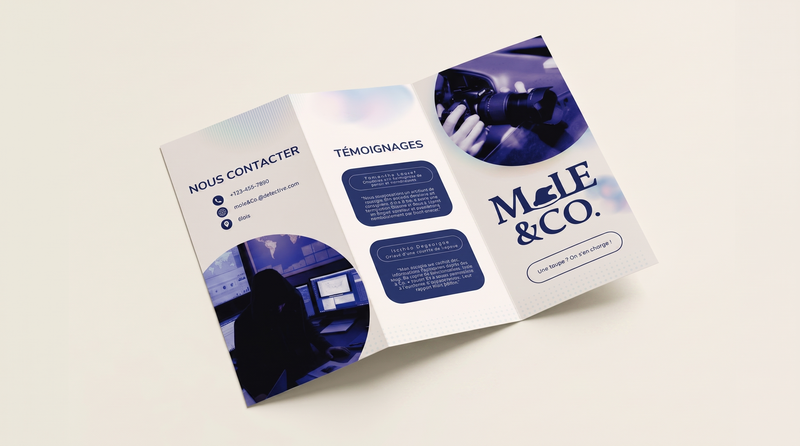
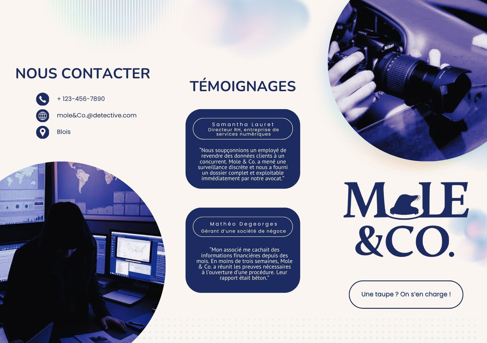
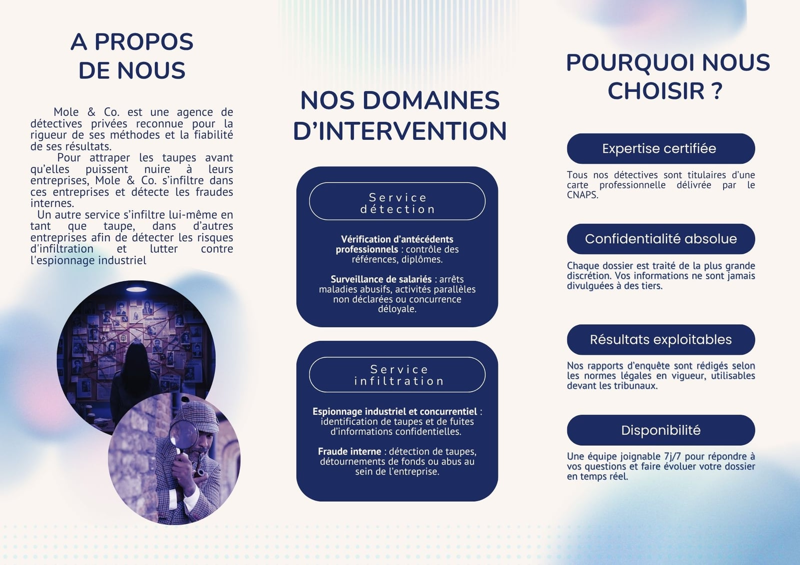

Mole & Co. — Plaquette commerciale

Le projet
Une plaquette commerciale pour l’agence fictive Mole & Co., réalisée dans le cadre de la SAE 202. Elle présente les services en reprenant la charte graphique et des témoignages fictifs liés à l’exercice.
Les étapes
Analyse du brief (cible, ton, message) → Structure du contenu → Rédaction → Mise en page selon la charte graphique
Réalisations

